- home
- >
- Text Features
Text FeaturesInserting textAvsP works like any standard text editor, and provides all the basic features one would expect, such as Copy, Paste, Find, Replace, Undo, Redo, etc. If you know how to use Notepad to create AviSynth scripts, you already know how to use AvsP. However, there are a great number of text features AvsP has in order to specifically help with the creation of AviSynth scripts. The number of features can be a bit overwhelming, so here's a quick summary which highlights the differences of some key text insertion features:
Be sure to choose the right feature for the right job, it will make your life a lot easier. Insert sourceThis is the function you're likely to use most to insert filenames. You can access it a number of ways:
(Note that the script's right-click menu is identical to the program's Edit menu.) The function shows a file open dialog box, allowing you to select a file from anywhere on your computer. If you click "OK", then it inserts an appropriate AviSynth filter along with the filename in the text at the current cursor position. For instance, if you select "C:\test.avi", the text "AviSource("C:\test.avi")" gets inserted into the script. The appropriate AviSynth filter is determined by what is referred to as the extension-based templates, which can be edited from the menu command "Options -> Extension templates". Note that any file extensions not defined here are automatically wrapped with "DirectShowSource(***)". 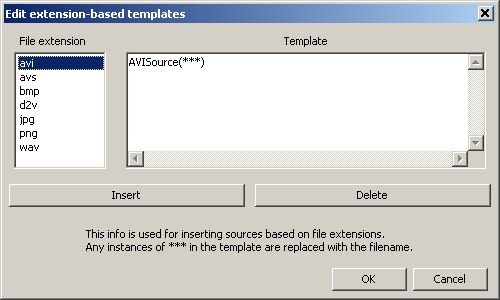
Insert filenamemenu command "Edit -> Insert -> Insert filename..", keyboard shortcut Shift+F9 Similar to Insert source, this function shows a file open dialog box, allowing you to select any file on your computer. If you click "OK", it simply inserts the filename into the text - no AviSynth filter, no surrounding quotes, nothing but the filename. This function is useful in the special case where you want to insert a filename but you don't want or need the extension-based template. Insert pluginmenu command "Edit -> Insert -> Insert plugin...", keyboard shortcut F10 Again, this function is similar to Insert source, with two key differences. First, the file open dialog starts off in the AviSynth plugin directory. Second, instead of wrapping the filename with an extension-based template the function wraps the filename with "LoadPlugin(***)". Insert frame numbermenu command "Edit -> Insert -> Insert frame #, keyboard shortcut F11 This function simply inserts the current frame number from the video preview in the text at the current cursor position. There are of course other ways to do this, but this method is the fastest. Drag-and-dropAvsP allows for dragging and dropping of files from a file manager like Windows Explorer. If the dropped file is an AviSynth script (ie, has a .avs or .avsi extension), the script is opened in a new tab. Otherwise, the dropped file is inserted as a video source with the appropriate extension-based template (see Insert Source section) at the current cursor position - note that the cursor moves with the mouse during the dropping process. If you drop a video source file on an area of the program besides the text region, then the file is inserted as a source in a new tab. If you drop multiple files onto the program, they are all inserted in new tabs. Open With >If AvsP recieves a non-AviSynth script filename from the command line, it treats the file as a video source and inserts text using the appropriate extension-based template. This means for every file extension you are interested in, you can add AvsP to the extension's "Open With" menu, allowing you to quickly create AviSynth scripts for any video source directly from your file manager. 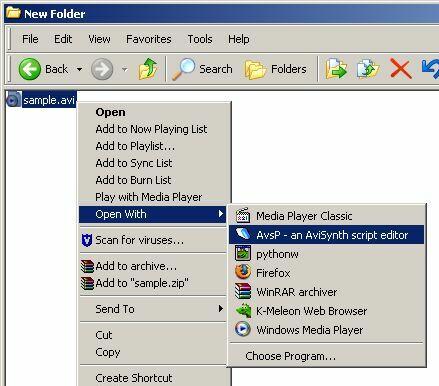
Filter presetsFilter presets work with in conjunction with autocompletion to insert predefined text any time you would autocomplete a filter name. You can define a preset for each filter defined in AvsP. You can define presets from "Options -> AviSynth function definition..." (see the next section). Whenever you perform an autocomplete action, instead of inserting the filter name, the program will insert the preset text instead (assumming a preset is defined for that filter). So for example, you can set the preset for TemporalSoften to "TemporalSoften(4,4,8,15,2)" if you find yourself starting with those set of values often. When you perform the autocomplete action to insert the preset text, by default the text cursor will appear at the end of the inserted preset text. You can configure where you want the cursor to appear after preset insertion by using cursor tags within the preset, where a cursor tag is the set of characters "[|]" (without the quotes). So following the last example, by setting the preset to "TemporalSoften(4,4,8,15[|],2)", the cursor will appear between the number 15 and the comma whenever the preset is activated (note that all cursor tags are removed when the preset is inserted into the script). Furthermore, you can use two cursor tags to specify not just the cursor position, but the selected text as well. So by setting the preset to "TemporalSoften(4,4,8,[|]15[|],2)", the number 15 will be highlighted whenever the preset is activated, making it easy to modify the value. Inserting text with macrosMacros are covered in a different section, but I'll make a brief mention here. Once people get some experience using AviSynth, they often develop a catalog of "favorite scripts". Sometimes its a combination of filters good for cleaning video captures, or perhaps a script for dealing with badly mastered video with blending or poor IVTC. Whatever the case may be, AvsP's macros allow you to define menu commands to paste these types of scripts into a tab in a very simple fashion. Of course, macros can do a whole lot more than that, you can read about it here to find out more. AviSynth awareness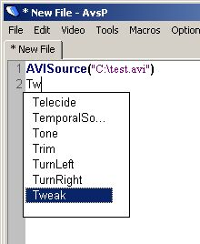 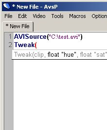Another way AvsP helps in making AviSynth scripts is by offering features common to professional text editors designed for specific programming languages. From the first screenshot, you can see how the text has AviSynth-specific colors (referred to as syntax highlighting), as well as a mechanism to help you enter filter names (referred to as autocompletion). From the second screenshot you can see a small popup window showing the arguments to the filter (referred to as calltips). These features help reduce the number of typos and mistakes when creating AviSynth scripts. The information for these features can be accessed from the menu command "Options -> AviSynth function definition". 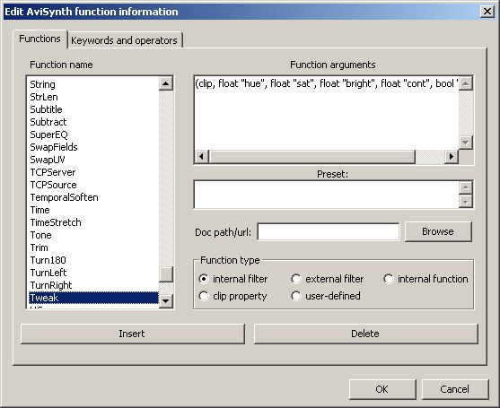
On the left there is a list of every AviSynth filter, sorted alphabetically. You can add new filters with the "Insert" button, delete an existing filter with the "Delete" button, or edit an existing filter name by selecting the item and left-clicking once. To the right of the filter list are properties specific to the selected filter. The "Filter arguments" text box determines what is displayed with calltips. The "Preset" text box is optionally used to insert alternate text during autocompletion. The "Doc path/url" text box allows you to select a specific documentation file or url associated with the filter. This file is opened when you left-click a calltip. You can also specify which category the function belongs to. This determines the font and color of the function in the text (see the next section). Similarly, in the "Keywords and operators" tab, you can configure the specific keywords and operators to be colorized by the syntax highlighter. You can also configure a miscellaneous word list, which will be colorized using the "Miscellaneous word" style. Again, defining these keyword and operator lists do not affect AviSynth itself, it merely determines which words should be colorized by which style. Syntax highlightingSyntax highlighting refers to an editor's ability to colorize and mark-up the text based on a specific programming language. For AvsP, any filter names are colored dark blue and bolded. Any open and close parentheses are colored blue if it is matched correctly, and colored red if not matched. In other words, a red parentheses indicates a syntax error, which makes it easy to check complex lines for mistakes without having to count parentheses. You can turn off syntax highlighting in the "Options -> Program settings..." dialog, in the "Text 1" tab. More realistically, you can edit the fonts and colors to your liking in the "Options -> Fonts and colors..." dialog: 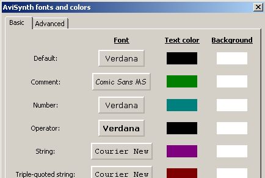
The screenshot shows only a portion of the available fonts and colors you can configure, there are over 60 different fonts and colors you can customize if you desire. Clicking on the font button brings up the standard font configuration dialog, where you can choose the font type, style (bold, italic, etc.), and size. Clicking on a color button brings up the standard color selection dialog. After clicking "OK" on the dialog box, you'll see the font and color changes updated accordingly in your scripts. The last font in the "Basic" tab is the monospaced font. This font is used when you activate the command "Options -> Use monospaced font". If you activate this command, then all the text in a script will appear with this font type and font size. This option is useful if you prefer your script text to have columns which line up. Note that this style will not override colors or bold and italic attributes, these are still obtained from the other various styles. AutocompletionAutocompletion is a mechanism for the program to help you enter keywords - in the case of AvsP, the autocompletion helps enter AviSynth filter names. Autocompletion works like this - when you type a word starting with a capital letter, a small list box shows up under the cursor, as shown in this picture. In the example, typing "T" resulted in a list box showing up with all the AviSynth filters starting with the letter "t". You can select a filter from the list using the arrow keys or mouse. If you keep typing the program automatically selects a matching filter name from the list - in the example, typing "w" after typing "T" selected the "Tweak" filter. By pressing the Enter or Tab key, the filter name is automatically entered into the text (along with an open parentheses - you can change this behavior in the "Options -> Program settings..." dialog, in the "Text 1" tab). An alternate way to show the autocomplete list box is to use the keyboard shortcut Ctrl+Space (also available from the menu command "Edit -> AviSynth function -> Autcomplete"). In order to use this method, simply begin typing a filtername (no need to start with a capital letter), then hit Ctrl-Space. The autocomplete list box will consist of filters which begin with the word fragment typed so far - so if you type "te" and hit Ctrl-Space, the autocomplete list box consists only of the filters "Telecide" and "TemporalSoften", since those are the only filters which start with "te". If you hit Ctrl-Space and there is only one match to the current word fragment, then no list box is shown, and the filter is entered automatically. If a preset exists for a filter, then whenever the autcomplete mechanism is activated for that filter, instead of entering the filtername and an open parentheses into the text, the preset text is entered instead. This is especially useful for entering text with user sliders, since they require independent presets per filter. CalltipsCalltips are small windows which popup whenever the text cursor is within a filter's arguments. The appropriate argument within the calltip is colored black based on the cursor's position. 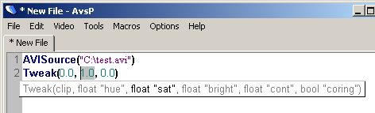
Left-clicking on a calltip triggers AvsP to open the filter's associated documentation file. The documentation file is found as follows. First AvsP checks to see if any file or url was defined in the "Options -> AviSynth function definition" dialog. If nothing was defined, then AvsP searches in the defined search directories (see below) for any file with the same name as the filter, with a .htm, .html, or .txt extension. If no documentation was found, then a message box is shown; otherwise, the file or url is opened with the appropriate program. You can edit the directories AvsP searches for filter documentation in the "Options -> Program settings..." dialog, in the "General" tab. 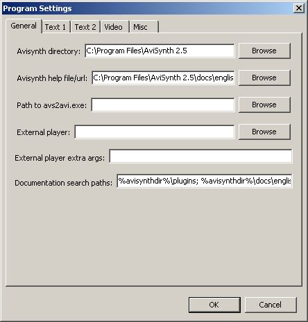
The default search paths are:
where %avisynthdir% is the installed AviSynth directory. Note that the search paths are defined in a single line of text, where each path is separated by a semicolon. You can add or remove any number of search paths. You may occasionally run into the case where there doesn't exist a documentation file for a specific filter. For example, the documentation for Sharpen exists in %avisynthdir%\docs\english\corefilters\Blur.html (since Sharpen is really just a negative Blur). In this case, the easiest thing to do is make a shortcut for Blur.html and rename the shortcut to Sharpen.html. This method may be preferable to editing the individual filter doc paths, it's up to you. Here's a little trick you can use with calltips. As an alternative to opening documentation in your default web browser as described above, you can add little comments per filter and have them show up in the calltips. Here's an example. In the "Options -> AviSynth function definition" dialog, let's edit the "Filter arguments" text for the TemporalSoften filter like this: 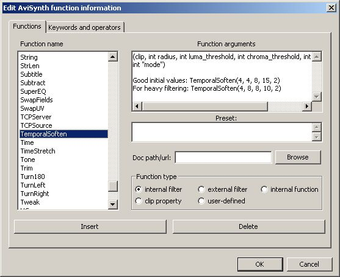
Now whenever the calltip pops up, it looks like ths: 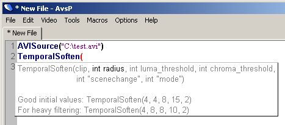
Notice how the filter arguments are still wrapped and lined up appropriately, despite the extra text we added. Cool! MiscellaneousThere are a couple more text-related features which should be mentioned here. Saving a sessionAvsP allows you to save scripts like any other text editor. However, if you are working on several scripts at one time and want to save them as a single project, you can use the "save session" feature (from the menu "File -> Save session...", or use the keyboard shortcut Alt+S). This function saves all the scripts in the tabs into a single file with a .ses extension. It also keeps track of other program information, such as the video frame number and whether the preview was visible or not. In this way, when you load a session (from the menu "File -> Load session..." or keyboard shortcut Alt+O), the state of the program is fully restored. Show function definitionIf you're working with a script and notice some function whose calltip you want to change, or some user-defined function you didn't set up for syntax highlighting yet, there's a quick way to enter the necessary information. Simply place the cursor on the function or inside its parentheses and click on the menu command "Edit -> AviSynth function -> Show function definition", or use the keyboard shortcut Ctrl+Shift+D. This will bring up the AviSynth function definition dialog. If the function was already defined, it is automatically selected, so you can quickly edit or add any new info. If the function hasn't yet been defined, you will be prompted first to enter the function name and arguments. Using this command will allow you to quickly extend AvsP's function database to suit your needs. Export/Import filter customizationsAvsP allows you to customize a large amount of filter information, such as calltips, autocompletion presets, and documentation paths. If you want to share these customizations with someone else, you can export your customizations with the "File -> Export filter customizations" command. This command will open a dialog box showing the entire list of AviSynth filters, as seen here: 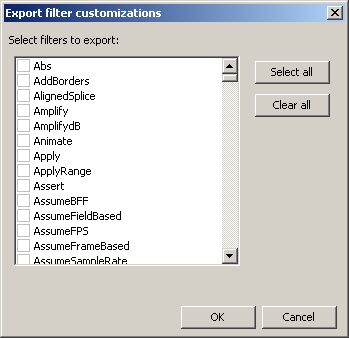
You can select any or all filters to export. When you click on the "OK" button, you will be prompted on where to save your customization file. You can then send this file to someone else, who can import the file using the "File -> Import filter customizations" command. This command will first prompt you to select the customization file, and then will bring up a very similar dialog box, this time showing all the filters available for importing. Simply select all the filters you wish to import and click on "OK". On the import filter customizations dialog box, there's also a checkbox labeled "Overwrite all data". If this is not checked, then the filter database will be updated only with information that does not yet exist in the current database. If the checkbox is checked, then the filter database will be updated overwriting any existing information. In general, you should leave this checkbox unchecked unless you are willing to discard your own customizations for the filters you select to import. Scrap windowThe scrap window is similar to a text tab in AvsP, but it exists in its own small window separate from the main program, and it does not have any AviSynth awareness features. You can show the scrap window using the menu command "File -> Toggle scrap window", or use the keyboard shortcut Ctrl+P. It gives you a place to write down small bits of text, whether its a bitrate you're considering for compression or some decent filter values for a certain script. The interesting thing about the scrap window is that the text is automatically saved when you close AvsP, so anything you enter into the scrap window will never be lost, unless you specifically delete it. The scrap window becomes particularly useful when you use macros, as it gives you a place to programmatically enter text with visual feedback. |
|